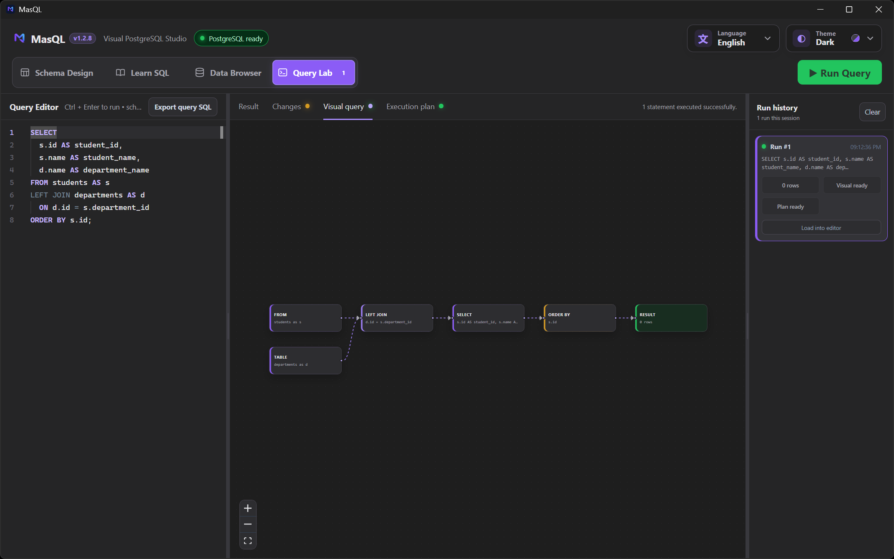
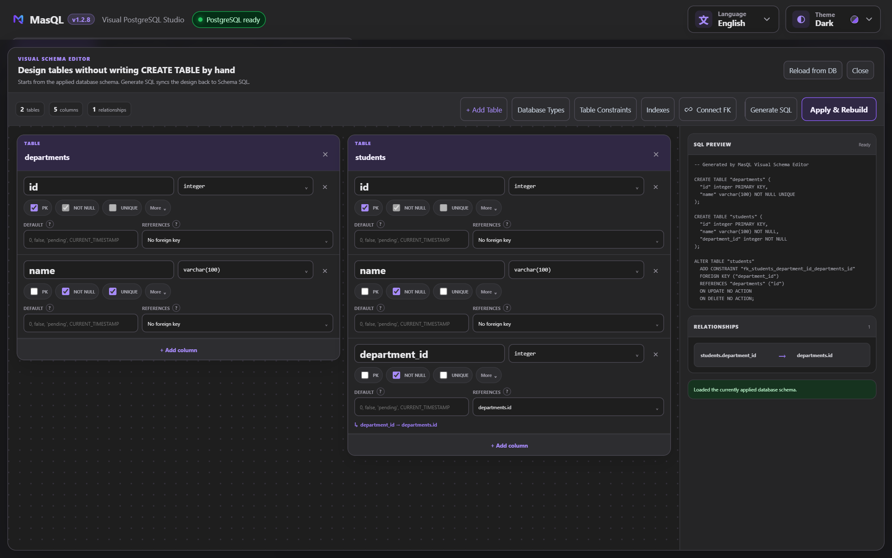
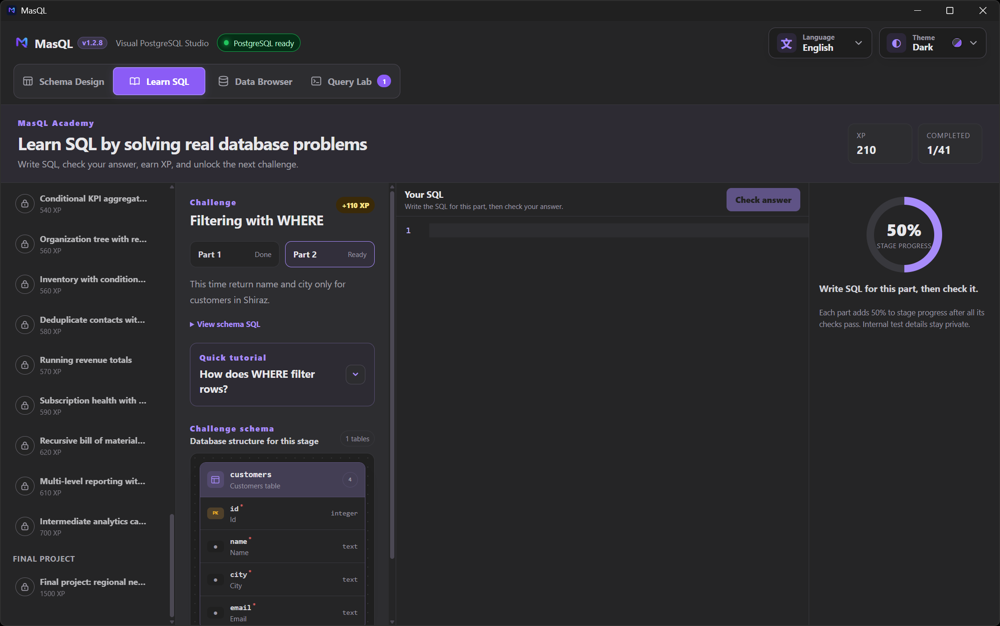

پایگاه داده را ببینید.
SQL را یاد بگیرید.
محیطی بصری برای PostgreSQL و یادگیری SQL با تمرینهای عملی.
- ویندوز ۱۰ و ۱۱
- قابل استفاده آفلاین
- استفادهٔ رایگان

از نوشتن کوئری تا درک نتیجه.
کوئری بنویسید، نتیجه را ببینید و شیوهٔ اجرای آن را بررسی کنید.

مسیر کوئری را دنبال کنید.
ارتباط جدولها، پیوندها، فیلترها و ستونهای خروجی را ببینید.

شیوهٔ اجرای کوئری را بشناسید.
طرح اجرای PostgreSQL را با توضیح مرحلههای خواندن و پیوند دادهها بررسی کنید.

جدولها را بصری بسازید.
ستونها، کلیدها و محدودیتها را تنظیم و کد تولیدشده را بررسی کنید.


با نوشتن SQL یاد بگیرید.
آموزش کوتاه را بخوانید، ساختار جدولها را ببینید و دو بخش مستقل را حل کنید.
مرحلهٔ مقدماتی
انتخاب و فیلتر داده، پیوند جدولها، تغییر رکوردها، کلیدها و تراکنشها.
مرحلهٔ متوسط
توابع پنجرهای، عبارتهای بازگشتی، موجودی کالا و گزارشهای تحلیلی.
پروژهٔ نهایی
ساختار گستردهٔ پایگاه داده و یک چالش جدی برای تحلیل درآمد.



دریافت MasQL برای ویندوز.
MasQL را برای ویندوز دریافت کنید و با یک پایگاه دادهٔ محلی شروع کنید.
نصب در چند گام
- فایل نصب نسخهٔ ویندوز را دریافت کنید.
- اگر MasQL باز است، آن را ببندید.
- فایل نصب را اجرا و راهنمای انگلیسی نصب را دنبال کنید.
نصبکننده امضای دیجیتال ندارد و ممکن است ویندوز پیام SmartScreen نشان دهد. پیش از نصب، کد SHA-256 فایل را بررسی کنید.
کد صحت فایل SHA-256
469ef6f4372dfda2883fb3f6bcd392b39789a731f2f1c964ca1a97c1d84961a0پیش از اولین کوئری.
آیا باید PostgreSQL را نصب کنم؟
خیر. MasQL از PGlite، موتور داخلی PostgreSQL، استفاده میکند. برای کار با پایگاه دادهٔ محلی به نصب یا تنظیم سرور جداگانه نیاز ندارید.
امتیاز تمرینها چگونه محاسبه میشود؟
هر مرحله دو بخش متفاوت دارد. پاسخ هر بخش را با دکمهٔ بررسی ارسال میکنید. حل یک بخش ۵۰٪ و حل هر دو بخش ۱۰۰٪ امتیاز مرحله را دارد. هنگام تایپ، پاسخ بررسی نمیشود.
آیا نسخهٔ مک یا لینوکس هم دارد؟
نصبکنندهٔ منتشرشده برای ویندوز ۶۴ بیتی است. در این نسخه، نصبکنندهٔ مک، لینوکس یا ARM64 ارائه نشده است.
با بهروزرسانی، اطلاعاتم حفظ میشود؟
نصبکننده برای حفظ پروژه و پیشرفت آموزشی طراحی شده است. پیش از بهروزرسانی برنامه را ببندید و از فایلهای SQL مهم خروجی پشتیبان بگیرید.